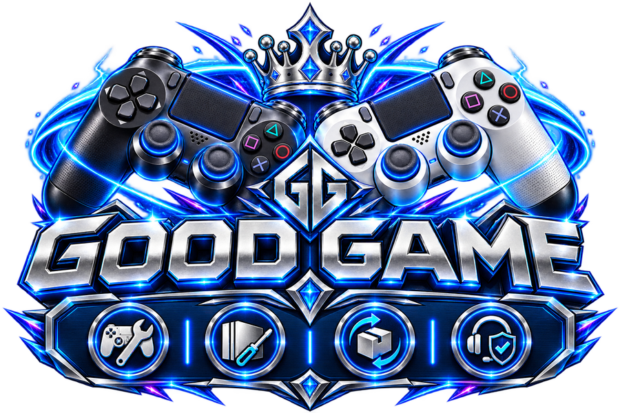

OFFLINE CACHE
تجهيز الكاشجاري بدء تثبيت الكاش...
يتم تجهيز ملفات الموقع الخفيفة للعمل بدون إنترنت.
المحاولة 1 من 3
PS4FW 11.50 — 13.52GOLDHEN 2.4b18.12HOST v12

أحمد رجب
صيانة البلايستيشن والدراعات • بيع • شراء • استبدال • خدمة ما بعد البيع
OFFLINE CACHE
تجهيز الكاشيتم تجهيز ملفات الموقع الخفيفة للعمل بدون إنترنت.